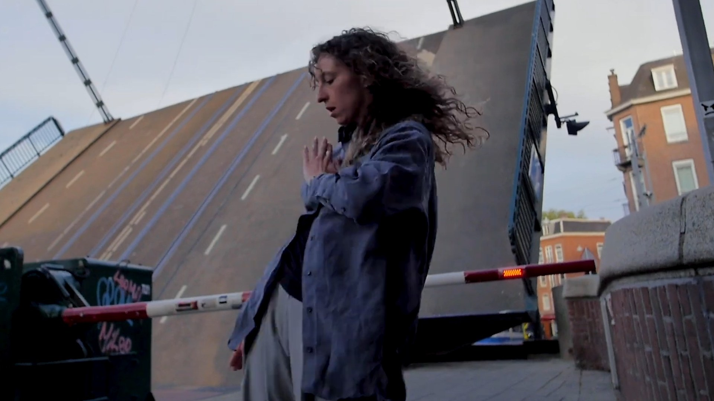
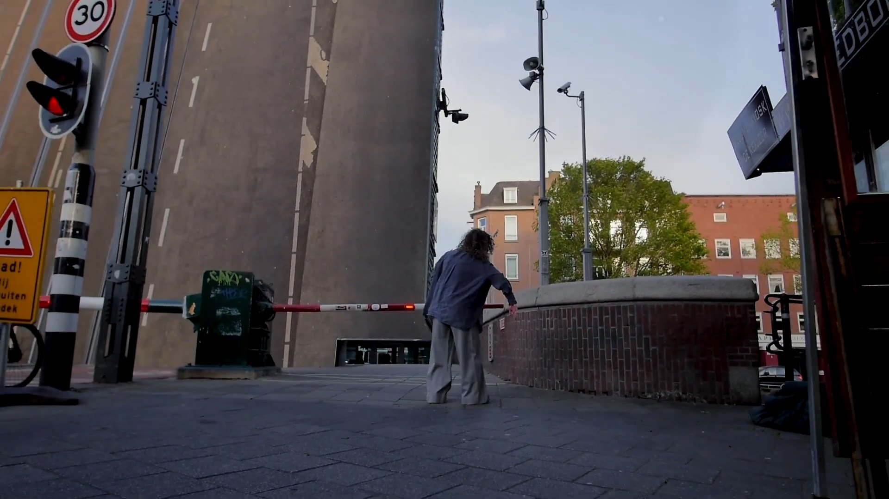
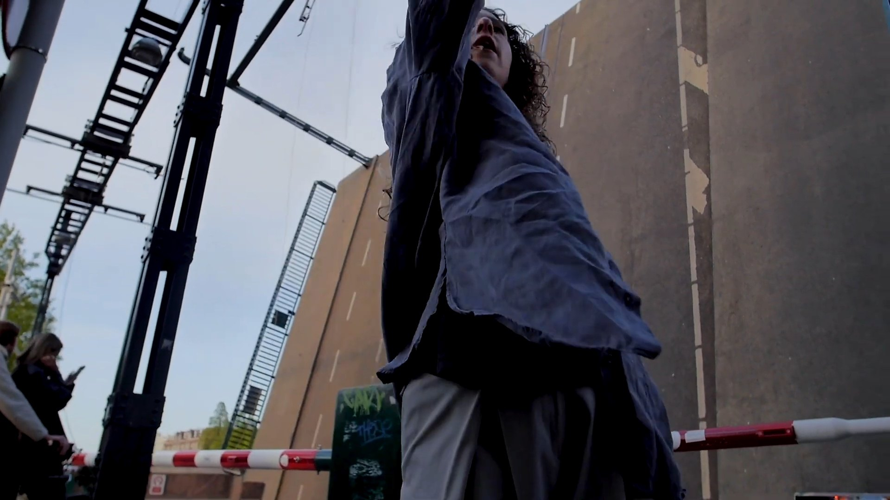
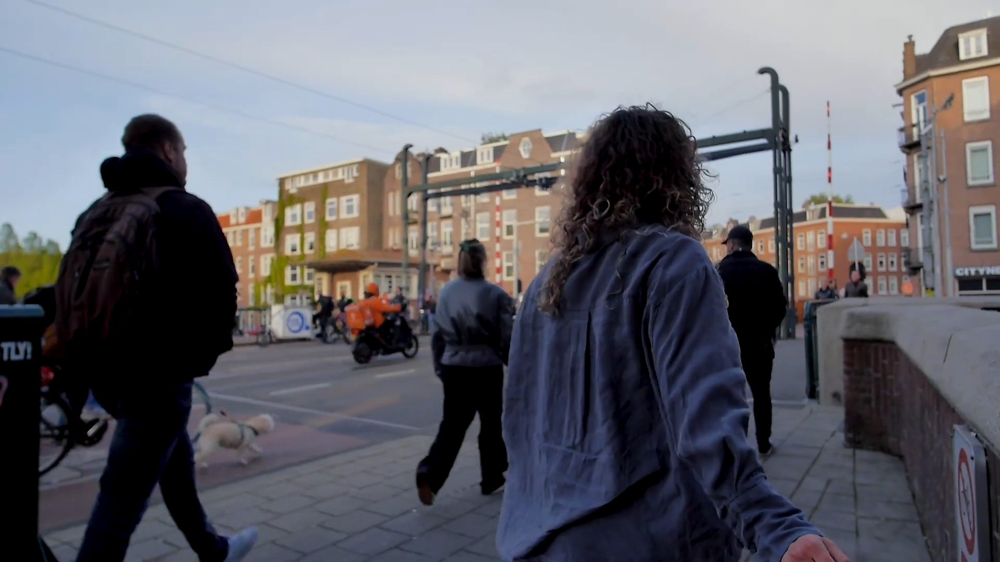

The Session
Marlie
Amsterdam
- Participant
- Marlie
- Location
- Amsterdam, Netherlands
- Direction & camera
- Felipe Díaz Galarce
- Production
- dEUSeXmACHINA films
The Session
The edited audiovisual record of the encounter. Not behind-the-scenes material: part of the work itself.
Watch now
Marlie, Amsterdam
Frames from the session



A person enters a place.
The camera begins to move.
The Session is where the film happens.